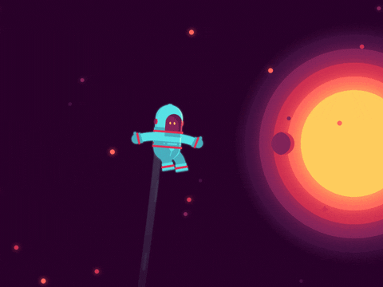

Fakta - Fakta Menarik Tentang Luar Angkasa
Tahukah kamu Fakta - Fakta Unik Ini?
- Luar angkasa benar-benar sunyi.
- Cahaya Matahari butuh 8 menit 20 detik ke Bumi.
- Bulan menjauh 3,8 cm per tahun.
- Saturnus bisa mengapung di air.

Tahukah kamu Fakta - Fakta Unik Ini?